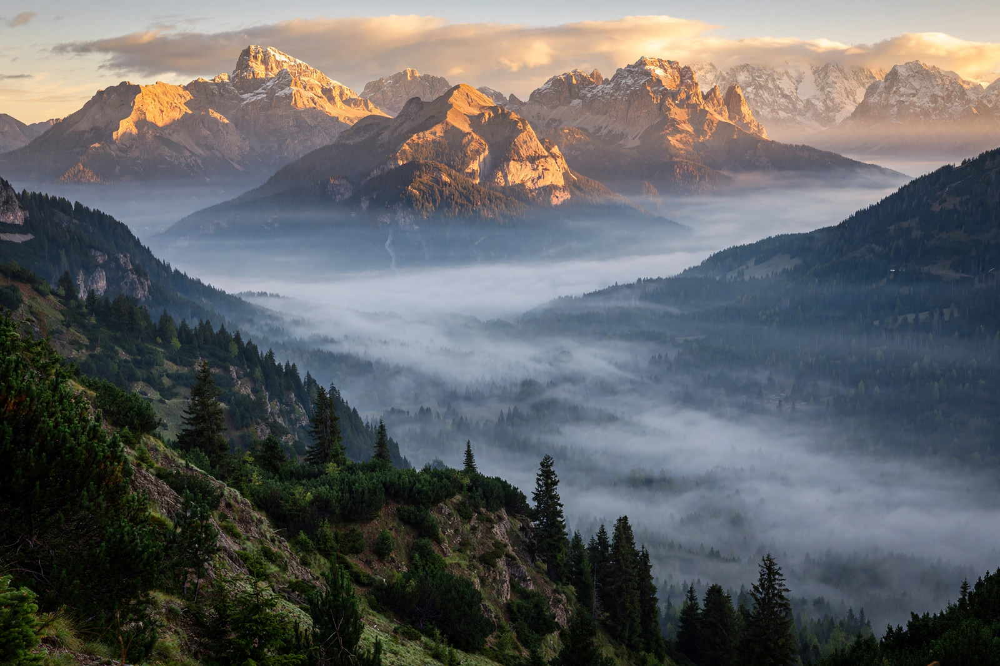

Category:Nature
Media relating to nature on Wikimedia Commons
This category gathers Commons media about nature and the natural world. Its subcategories include Animals, Plants, Fungi, Landscapes, Water, Weather, Forests, Mountains, National parks and Nature by country, containing many thousands of photographs, videos and sounds.

[Image: A nature photograph — a mountain landscape at sunrise]
Subcategories
Browse from here into Animals, Anatomy, Biology, Botany, Ecology, Geology, Natural history and Scenery, among many others.
Featured media
Many files here are Featured or Quality images, freely licensed for reuse with attribution.